Tester toutes les fonctions du robot (moteurs, capteurs, batterie, LED, roues…) depuis le navigateur, robot relié au PC par l'outil de connexion. Plus pratique et intuitif que les outils de port série classiques.
Avant de débrancher l'outil et de rendre le robot, il faut impérativement déconnecter l'interface en cliquant sur « FCT » puis sur « Connect Serial » :
Fermer le mode diagnostic : cliquer sur le bouton rouge ■ FCT.
Fermer la connexion entre les ports : cliquer sur ✓ Connected → le bouton redevient bleu Connect Serial.
Effectuer un test du robot pour vérifier qu'il fonctionne normalement.
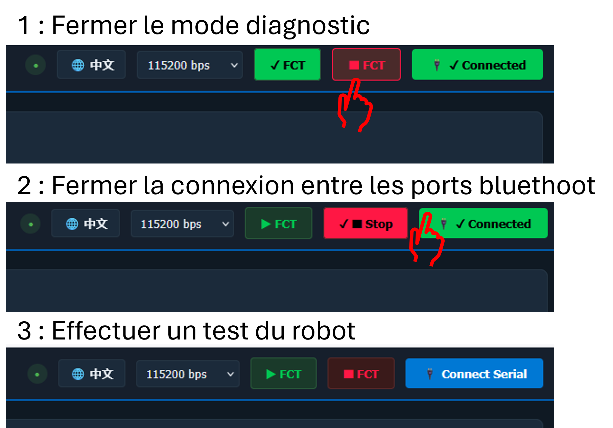
Présentation
1
À quoi sert FCT Assistant
L'assistant FCT permet de piloter et tester chaque organe du robot (roues motrices, brosses, ventilateur, pompe, serpillière, capteurs de vide / ultrason, bumpers, LED, IMU, LDS, carte mère, batterie…) et de lancer un diagnostic automatique complet.
Le test de fonctionnement de la station est encore en développement : pour la station, continuer à utiliser les outils de port série.
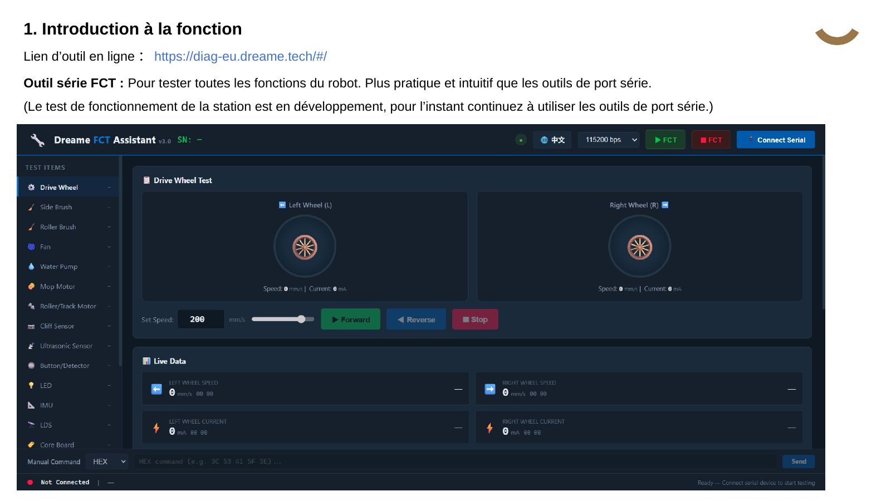
Préparation
2
Installer le pilote et brancher l'outil
Installer d'abord le pilote de l'adaptateur sur le PC (lien ci-dessus) : ouvrir l'installeur CH341SER.INF puis cliquer sur 安装 (Installer).
Brancher la petite carte de l'outil de connexion sur le port série du robot, et l'adaptateur USB sur le PC.
Se connecter à l'outil en ligne, puis ouvrir FCT Serial Tool dans le menu de gauche.
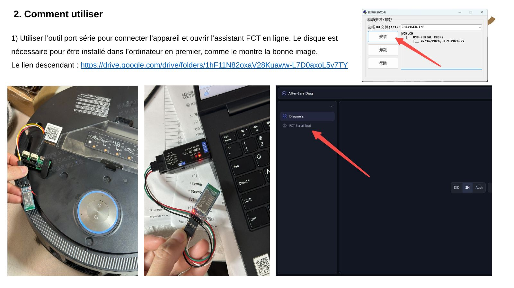
Connexion
3
Connecter le robot (port série)
Régler le débit sur 115200 bps (liste en haut à droite).
Cliquer sur Connect Serial.
Sélectionner USB Single Serial (COM XX).
Cliquer sur OK (连接). Le bouton passe au vert : ✓ Connected.
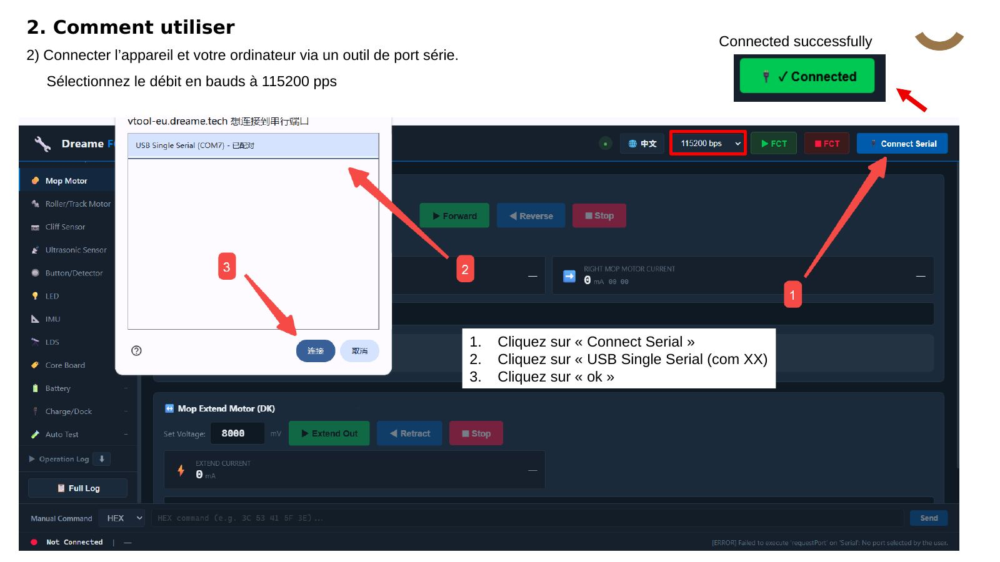
Mode test
4
Entrer / sortir du mode test FCT
FCT vert (✓ FCT) : entrer en mode test.
FCT rouge (■ Stop) : sortir du mode test.
Après le test, ne pas oublier de quitter le mode test ou de réinitialiser le robot avant de le rendre.
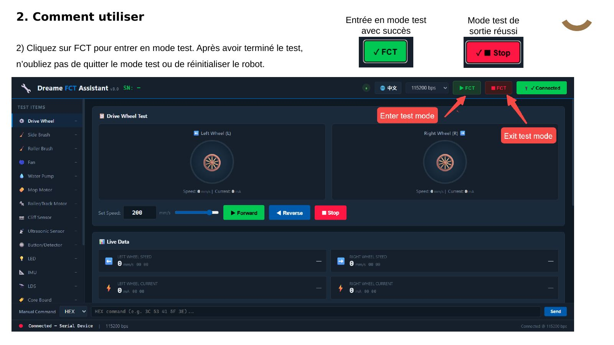
Diagnostic automatique
5
Lancer l'Auto Test
Cliquer sur Auto Test dans le menu de gauche.
Cliquer sur Start Auto Test : le SN du robot s'affiche et les modules sont testés à la suite.
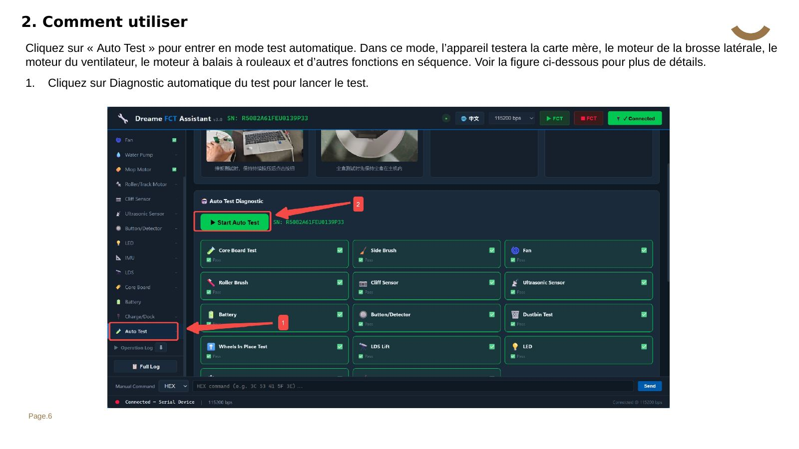
7 modules testés automatiquement, sans intervention :
Core Board (carte mère)
Un bip retentit ; en cas de réussite, le numéro de carte s'affiche.
Side Brush (brosse latérale)
8,8 V en avant 5 s — courant attendu 20 à 100 mA.
Fan (ventilateur)
10,0 V en avant 5 s — 15 000 à 25 000 tr/min, courant 500 à 2 500 mA.
Roller Brush (brosse rouleau)
8,0 V en avant 5 s — courant 80 à 550 mA.
Cliff Sensor (capteurs de vide)
Lecture de 6 valeurs IR — OK si valeurs ≠ 4096 et ≠ -1.
Ultrasonic Sensor
Lecture de l'écho — attendu 500 à 5 000.
Battery
Lecture ADC et température.
Chaque tuile indique son état : Testing (en cours), Pass (vert), Fail (rouge ✕).
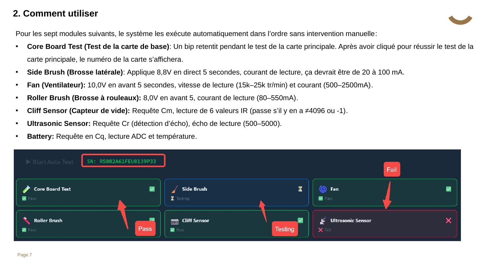
Étapes avec action du technicien
6
Modules à confirmer manuellement
Quand l'Auto Test arrive sur ces modules, une consigne apparaît sous les tuiles (en partie en chinois) : faire l'action puis cliquer sur le bouton vert.
Button / Detector (bumpers)
Appuyer puis relâcher les bumpers gauche et droit (à deux mains), puis bouton vert 已按压，开始检测.
Dustbin Test (bac à poussière)
Bac en place au départ ; le retirer, puis bouton vert 已取出，开始检测.
Wheels In Place (roues en place)
Soulever le robot pour déclencher les capteurs de chute gauche et droit, puis bouton vert 已抬起，开始检测.
LDS Lift (levage LDS)
Robot équipé d'un LDS relevable ? Vert是，升降LDS = oui, tester · Rouge否，跳过 = non, passer.
LED
7 effets s'affichent (Auto blanc/orange, Back blanc/orange, carte LED rouge/vert/bleu) : Vert正常 = normal · Rouge异常 = anormal.
Drive Wheel (roues motrices)
Soulever le robot (roues dans le vide), puis bouton vert 已抬起，开始测试. Roues en avant à 300 mm/s — attendu 285 à 315 mm/s et courant ≥ 30 mA.
Mop (serpillière)
Choisir le type selon le modèle : Roller / Track (rouleau/chenille) ou DoubleDisc (double disque).
Bac à poussière : sur certains modèles il faut ouvrir le couvercle du bac pour le retirer — la petite carte du port série peut alors se débrancher. Être prudent, ou retirer complètement le couvercle.
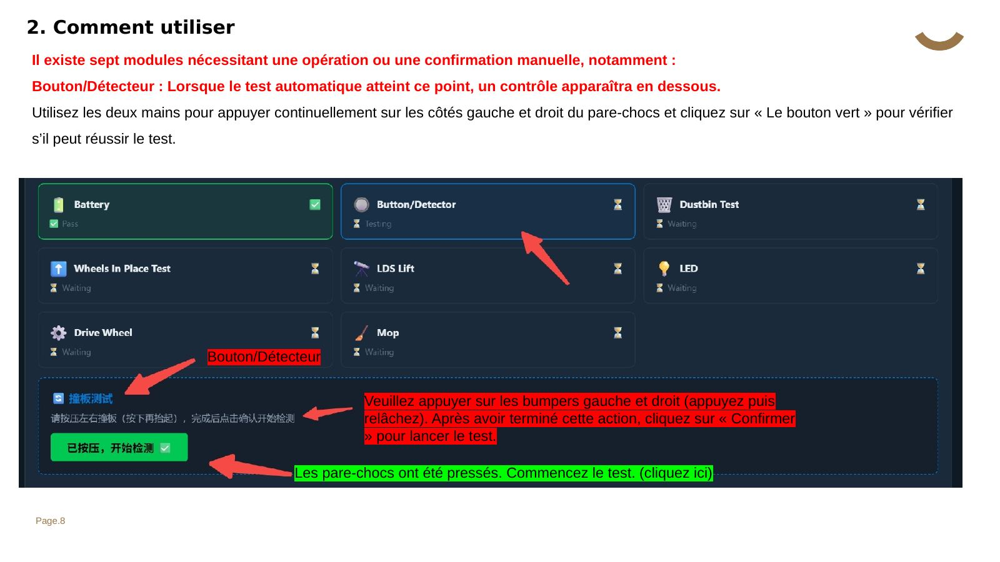
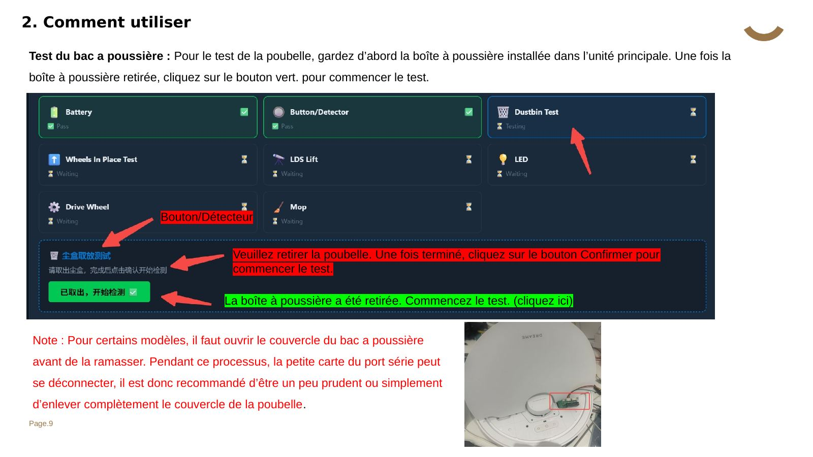
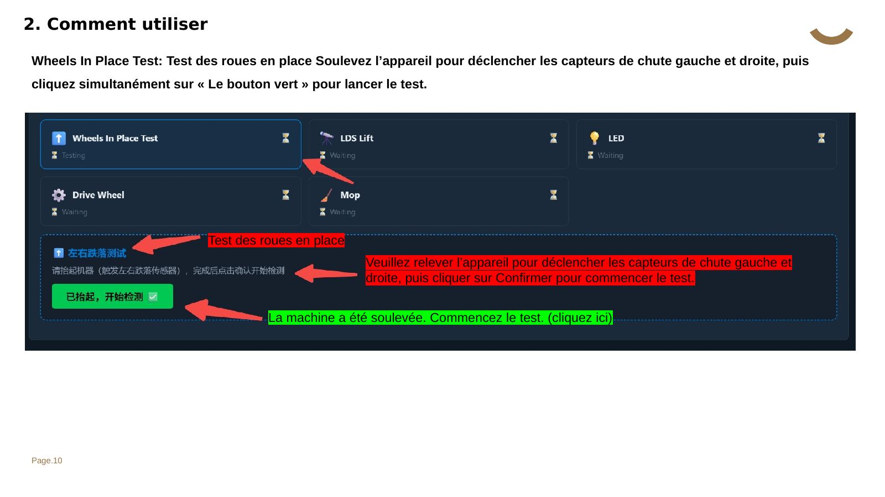
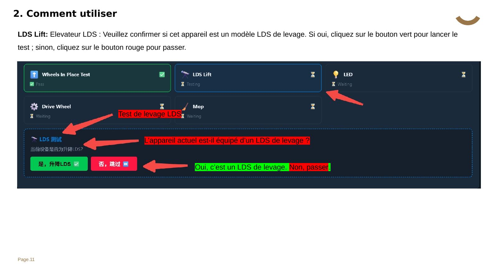
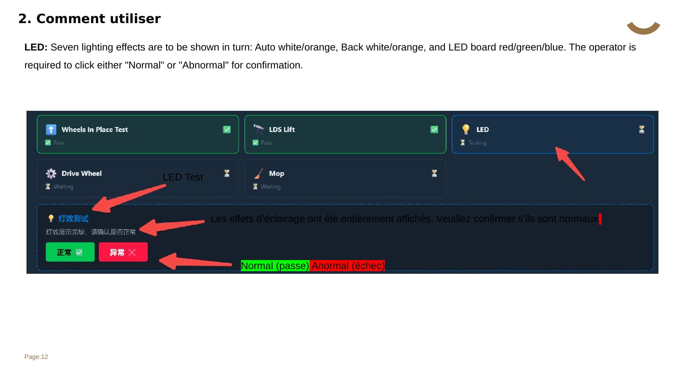
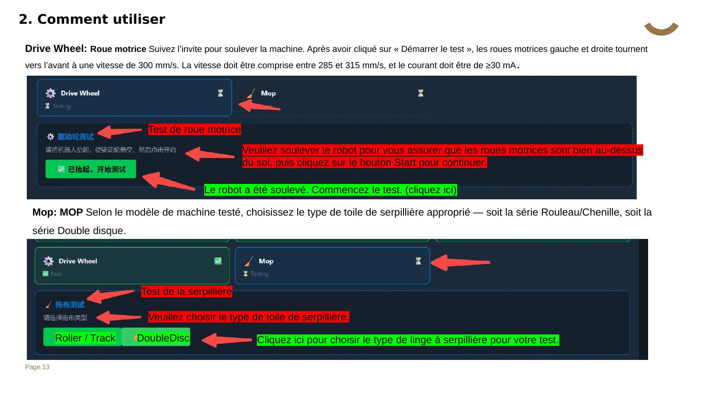
Résultat
7
Lire le rapport de diagnostic
À la fin, un rapport est généré automatiquement :
SN du robot et horodatage du test ;
résultat Pass / Fail et mesures détaillées de chaque module ;
recommandation de réparation pour chaque élément en échec (ex. « vérifier les connexions du moteur de brosse latérale ») ;
résumé total (ex. 14/14 Pass).
Si tout est bon : « 所有项目通过！机器状态正常 » = Tous les tests réussis ! L'unité fonctionne normalement.
Une partie de l'interface n'est pas encore traduite (chinois) ; une version entièrement localisée est annoncée par Dreame.
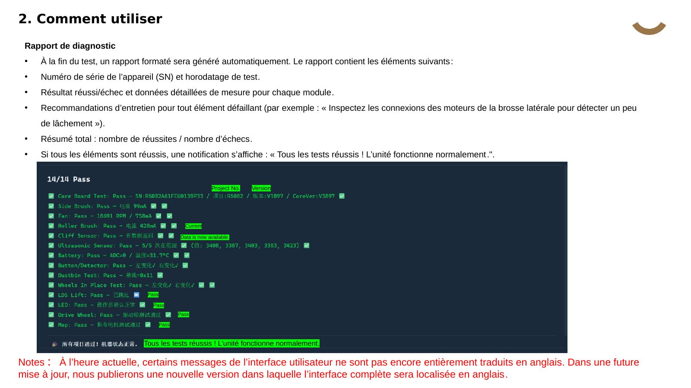
Tests unitaires (menu de gauche)
8
Piloter un organe à la main
Chaque élément du menu Test Items peut aussi être testé seul, avec lecture des données en direct :
Drive Wheel › Wheel Lift Control : lever les roues (Front / Mid / Rear / Lift Up) — le levage ne peut démarrer que depuis la position 0 (Front).
Drive Wheel Test : régler la vitesse, Forward / Reverse / Stop, et lire vitesse et courant de chaque roue.
Side Brush : régler la tension, Forward / Stop, lire le courant ; Side Extend Motor : Extend Out / Retract.
 ← HUB Drive Constructeurs
← HUB Drive Constructeurs